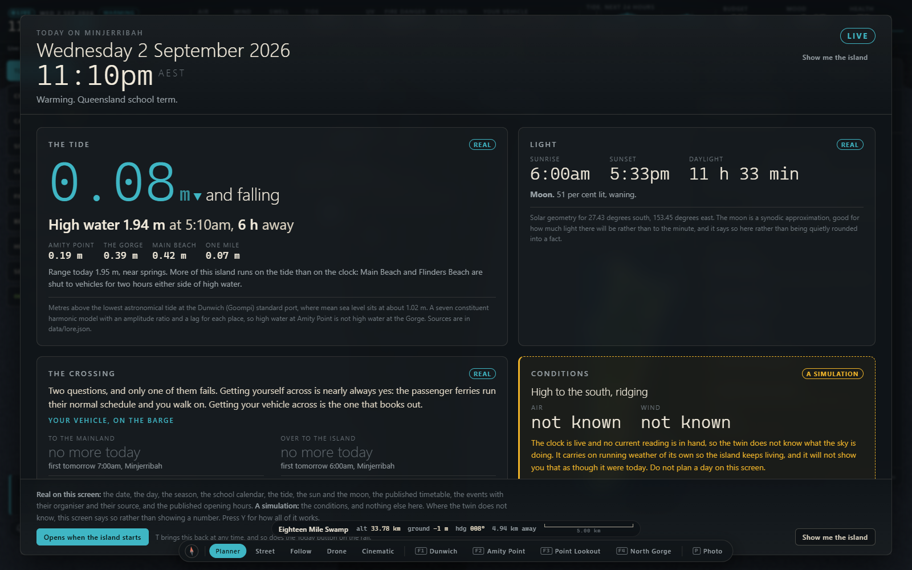

Minjerribah · North Stradbroke Island · Quandamooka Country
Minjerribah sits in Moreton Bay, thirty kilometres east of Brisbane. No bridge. Everything not already on the island comes by water.
Copernicus Sentinel-2, 13 July 2026 · sources
Where it is
Dunwich, or Goompi, faces the bay. Amity Point, or Pulan, is the northern corner. Point Lookout, or Mooloomba, sits on the headland above the North Gorge walk.
The first build's introduction: "Everything that is not already there arrives on a barge."
Sentinel-2 shot that on 13 July 2026, 17 metres to a pixel, shaded with real height. The surf beach runs the whole east side. Sand banks west, lakes inland, the old sand mine's pale scar. The first build's ground is 908 by 1314 cells, each 32 metres square, about one and a half house blocks. That is 1.2 million cells, built in under a second. The island itself is about 450,000 house blocks.
Dunwich (Goompi)
Two landing points: the Junner Street ferry terminal and the One Mile jetty. Camera bookmark F1 flies here.
Amity Point (Pulan)
Its own tide station in the first build. The introduction stands you on the shoreline: houses, road, rock wall, and the erosion levers. That erosion module is designed, not written.
Point Lookout (Mooloomba)
The README calls it "streets of houses on a headland above a beach", from 420 metres up. Whales sit off in season, drawn in daylight, not at night. North Gorge is bookmark four.
Everything arrives by water
The second build's crossings pack names a source for every record. Two operators' timetables, and a departure sign supplied 19 August 2026. All three run from Cleveland. The pack calls the crossing "the throttle on every other system in this world".
| Service | Operator | Lands at | Carries | Base timetable |
|---|---|---|---|---|
| Vehicle barge | SeaLink | Junner Street ferry terminal, Dunwich | vehicles and the people in them | 10 each way; 45 to 50 minutes across |
| Passenger ferry | SeaLink | Junner Street ferry terminal, Dunwich | passengers | 14 each way; no crossing time published |
| Passenger ferry | Gold Cats Flyer | One Mile jetty, Dunwich | passengers | 14 each way; departure times only on the sign |
On foot you can leave from 05:15 to 20:45, any day. A car only goes 07:00 to 17:30. The pack will not add the two together: "you cannot always get your car off."
SeaLink adds barge sailings that only show on its booking page, so any vehicle count here is a floor. Two vessels work that run, Sea Breeze and Minjerribah. Minjerribah is also the island's name; the pack warns nothing may read one for the other.
The tide
The island opens on the first build's Today board, tide first, at the Dunwich (Goompi) standard port. A standard port is the one place a tide table gets published for; everywhere else gets a lag and a ratio. High water at Amity Point is not high water at the Gorge. Four more stations read under it: Amity Point, the Gorge, Main Beach and One Mile.

The same board, on Main Beach and Flinders Beach: "shut to vehicles for two hours either side of high water." The first build's transport pack runs that out: two closed windows a day, each about four hours. They slide fifty minutes later every day. Cars bunch at the edge as a beach opens. You need a four-wheel drive and a vehicle access permit for the beach camping areas.
The barge timetable, the Amity Point sand flats and the low shelf at the Gorge all follow the same water. The first build adds up seven constituents: seven regular swings of known length. The second build ships none, with no published table for the Dunwich port. Its ferry page marks the water level "contested or unknown", with a date, not a curve.
Why here
You can walk across this island in a day. A storm, a power cut and a broken supply chain all look the same here: no barge, empty shelves.
Straddie's sand holds fresh water, a freshwater lens floating on salt. The mainland has been drinking it since 1996: about twenty megalitres a day. That is eight Olympic pools, one every three hours around the clock. The island itself uses 1.6 megalitres a day. The mainland take is twelve and a half times that. One file puts it at 40 per cent of the mainland and southern bay islands' water. Another puts it at 60 per cent of the Redlands supply. Neither file prints the total those shares come out of.
The ground here is wet sand, not rock. Dig a hole and it falls back in. That water is the heat sink, the water supply and the shielding at once. The first build's heat model runs on dry quartz sand with no water in it. Wet sand holds about 2.2 times the heat of dry sand. The two descriptions of the same ground disagree.
The law
Two Federal Court consent determinations of 4 July 2011 recognise Quandamooka native title rights and interests. The North Stradbroke Island Protection and Sustainability Act 2011 set the terms sand mining ended under. Both come before the engineering.
The scale
That is about forty busloads. A model can count households, roads and arrivals, and name what it missed.